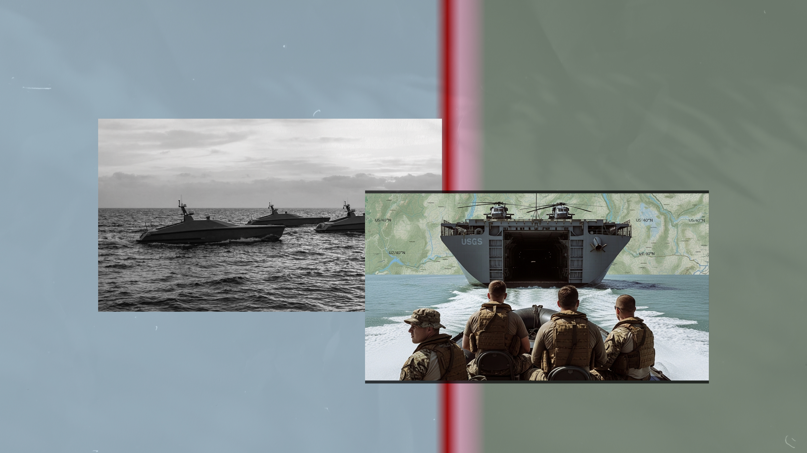
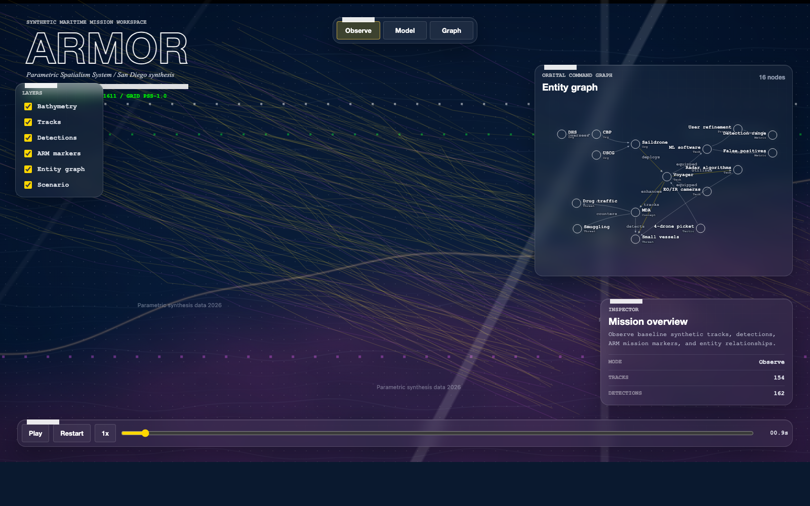
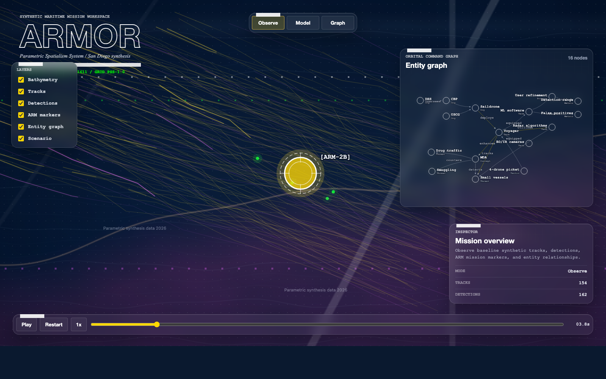
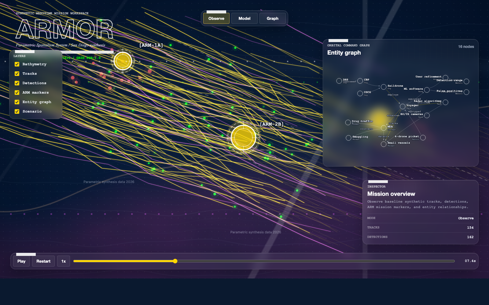
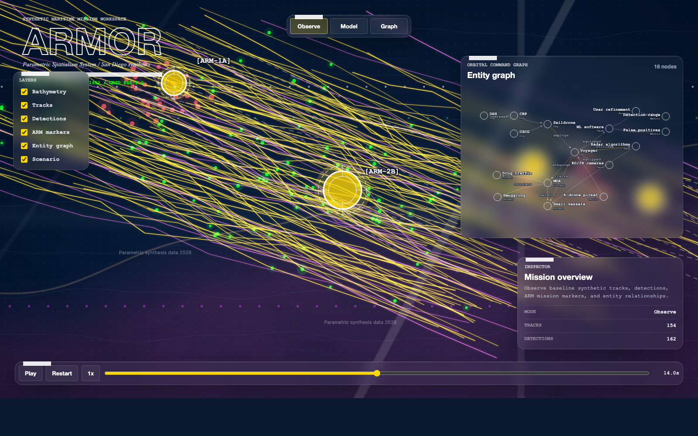

Patrol
Hold assigned lanes and surface contacts while keeping operators outside the first line of exposure.

Scan/AR-01
Classified autonomous vessel anatomy: hull, mast, sensor channels, and fleet telemetry rendered as a forensic maritime scan.
 Concept render
Concept render
ARMOR turns patrol, reconnaissance, and screening work into a distributed autonomous layer that can hold water, relay awareness, and move as a coordinated surface fleet.
Sensor Spine
The platform concept emphasizes fast deployment, route discipline, and command oversight across constrained maritime approaches.

Concept renderHold assigned lanes and surface contacts while keeping operators outside the first line of exposure.
Extend visual and electronic watch over harbor mouths, island chains, and gray-zone approaches.
Operate as independent craft or as a synchronized group with route, status, and tasking discipline.
Concept Targets
ARMOR is platform-agnostic at the concept level — the picket logic, the autonomy posture, and the alert calibration are common across classes. The four classes below are the candidate hulls under consideration. Class A is the baseline; B, C, and D are alternates sized for niches the baseline does not cover.
Concept-stage targets — not engineered specifications. Values pending CAD-anchored trade study (DT-05) and vendor confirmation.
 Concept render
Concept render
ARMOR-A — Picket
Persistent station-keeper. The baseline.
Wave-piercing monohull, wind- and solar-augmented diesel-electric. Built for weeks-on-station along an approach lane with overlapping radar / EO-IR / classifier coverage. Lowest signature in the family.
Employment: standard 4-platform picket along a named approach lane. The class the SD-2014 reference scenario was authored against.
ARMOR-B — Sprint
High-speed mobile picket. Unpredictable.
Lighter hull, higher cruise speed, broader patrol pattern instead of station-keeping. Trades coverage continuity for unpredictability — raises adversary's targeting cost when the picket can't be routed around.
Employment: paired roving patrol covering a wider lane than two A-class can hold statically. Sprint capability for repositioning ahead of a forecast adversary window. Without mesh, ARMOR-B enters Denied mode faster than A-class under jamming or range extension — factor into picket architecture.
ARMOR-C — Endurance
Forward-deployed long-haul watcher.
Larger hull, deeper power and payload margin, longer time at sea without shore refit. Built for forward / partner-theater deployments where the refit cycle of A-class is too short. Carries the optional acoustic / passive-RF kit for the USN variant.
Employment: theater-resident forward watch under partner force command. Carries the V-USN sensor package; optional V-FMS release-controlled classifier baseline.
ARMOR-D — Compact
Cutter-deployable. Loss-tolerant.
Smallest class. Cutter-launched-and-recovered. Sized to be the loss-tolerant edge of a two-tier picket: paired with an A-class watcher, dispatched to investigate / hold contacts, recovered to the cutter. Designed for graceful loss.
Employment: two-tier picket — A-class watches, D-class investigates and holds contacts. Loss tolerance budget per fielded year is materially higher. LOS dependency means cutter displacement triggers Denied mode; recovery nav must be pre-tasked before the host maneuvers.
Bathymetry, sensor tracks, detections, and ARM-site markers (patrol station designators, distinct from ARMOR platform classes), rendered as a single operational picture. Drive the simulation below or step through the captured moments.
 Concept render
Concept render




 Concept render
Concept render
 Concept render
Concept render
Engineering Dossier
ARMOR is run through the warfighter-systems-architect framework — mission analysis, scenario design, software and hardware architecture, qualification plan, and executive briefing. Every claim is gate-checked. Every blocker is named, with a resolution path. The dossier below is the program-engineering record behind the site.
Watch-officer framing, decision targets, stakeholder map, and the operator-burden hypothesis that gates everything downstream.
Read briefFive concepts considered, three retained. Three scenarios — baseline, mimicry stress, comms-denied stress — with red/blue/white-cell logic.
Read package11,250 design points swept across picket count, spacing, sensor mix, and false-positive rate. Validation gaps named, not deferred.
Read evidenceThree-tier autonomy with calibrated alerts, four-mode comms posture, sensor-fusion contract, and trust-calibration UX rules.
Read architectureVoyager-class baseline, sensor-mast integration, ~740 W power envelope, three-channel comms, sustainment tail, three-variant matrix.
Read planTwenty qualification events mapped to MIL-STD, cyber, and authorities reviews. Eight named blockers with resolution paths.
Read readinessSixteen-slide deck outline, every claim color-coded — measured, modeled, assumed, unevidenced. No claim beyond the evidence.
Read briefingScenario template, COA library, measure set, decision cards, model patterns. The next concept doesn't restart from zero.
Read templatesFleet Mesh
 Concept render
Concept render
 Concept render
Concept render
 Concept render
Concept render
Briefing Lock
Request a mission profile, autonomy stack overview, or fleet integration brief for coastal defense planning.
Request Brief